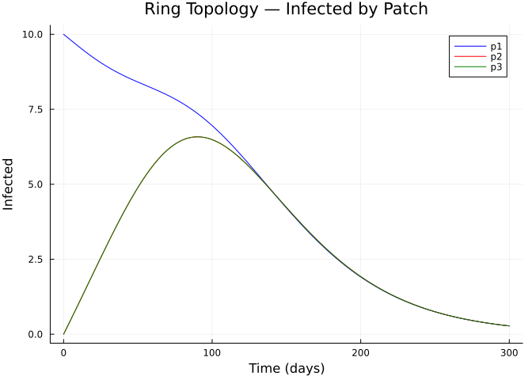
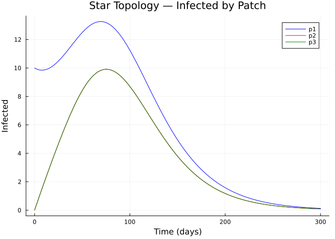
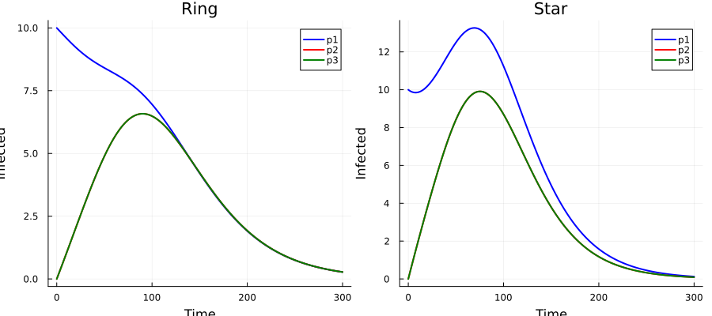
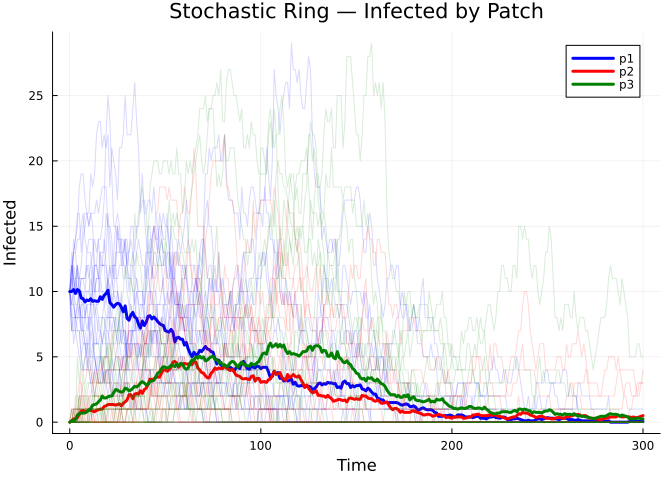

Spatial Composition
Introduction
This vignette demonstrates how to build spatial (metapopulation) models using Odin.jl’s categorical extension. Rather than writing a multi-patch model from scratch, we define a single-patch SIR as an EpiNet, replicate it across patches, and wire them together with migration transitions.
We compare two spatial topologies — ring (nearest-neighbour) and star (hub-and-spoke) — and validate against a manually-written ODE model.
Setup
using Odin
using PlotsA Single-Patch SIR
We start with the standard SIR Petri net. Each patch will be a copy of this:
sir_base = SIR(; S0=990.0, I0=10.0, R0=0.0)
println("Species: ", species_names(sir_base))
println("Transitions: ", transition_names(sir_base))
println("Stoichiometry:")
display(stoichiometry_matrix(sir_base))Species: [:S, :I, :R]
Transitions: [:inf, :rec]
Stoichiometry:
3×2 Matrix{Int64}:
-1 0
1 -1
0 1Strategy: Stratify for Patches, Compose for Migration
The categorical approach to spatial modelling has two steps:
- Stratify the base SIR by patch labels — this creates per-patch compartments (
S_p1,I_p1, etc.) - Compose with a migration sub-model — this adds movement transitions between patches
Step 1: Create a 3-Patch Model
We use stratify() with a contact matrix that represents spatial coupling of infection. The contact matrix controls how infectious individuals in one patch contribute to force of infection in another:
patches = [:p1, :p2, :p3]
# Ring topology: each patch contacts its neighbours
C_ring = [1.0 0.1 0.1;
0.1 1.0 0.1;
0.1 0.1 1.0]
sir_ring = stratify(sir_base, patches; contact=C_ring)
println("Ring model — $(nspecies(sir_ring)) species, $(ntransitions(sir_ring)) transitions")
println("Species: ", species_names(sir_ring))Ring model — 9 species, 12 transitions
Species: [:S_p1, :I_p1, :R_p1, :S_p2, :I_p2, :R_p2, :S_p3, :I_p3, :R_p3]Step 2: Add Migration
Migration moves susceptibles between patches. We define migration sub-models and compose them with the stratified SIR:
# Migration sub-model: S moves between adjacent patches
# In a ring: p1↔p2, p2↔p3, p3↔p1
function make_migration_net(from::Symbol, to::Symbol, rate::Symbol)
s_from = Symbol(:S_, from)
s_to = Symbol(:S_, to)
t_name = Symbol(:mig_S_, from, :_, to)
EpiNet(
[s_from => 0.0, s_to => 0.0],
[t_name => ([s_from] => [s_to], rate)]
)
end
# Ring migration: bidirectional between neighbours
mig_nets = [
make_migration_net(:p1, :p2, :mu),
make_migration_net(:p2, :p1, :mu),
make_migration_net(:p2, :p3, :mu),
make_migration_net(:p3, :p2, :mu),
make_migration_net(:p3, :p1, :mu),
make_migration_net(:p1, :p3, :mu),
]
# Compose: stratified SIR + all migration sub-models
sir_spatial_ring = compose(sir_ring, mig_nets...)
println("Spatial ring — $(nspecies(sir_spatial_ring)) species, $(ntransitions(sir_spatial_ring)) transitions")
println("Transitions: ", transition_names(sir_spatial_ring))Spatial ring — 9 species, 18 transitions
Transitions: [:inf_p1_p1, :inf_p1_p2, :inf_p1_p3, :inf_p2_p1, :inf_p2_p2, :inf_p2_p3, :inf_p3_p1, :inf_p3_p2, :inf_p3_p3, :rec_p1, :rec_p2, :rec_p3, :mig_S_p1_p2, :mig_S_p2_p1, :mig_S_p2_p3, :mig_S_p3_p2, :mig_S_p3_p1, :mig_S_p1_p3]Simulating the Ring Topology
We seed the infection in patch 1 only:
sir_ring_gen = compile(sir_spatial_ring; mode=:ode, frequency_dependent=true, N=:N,
params=Dict(:beta => 0.3, :gamma => 0.1, :mu => 0.01, :N => 1000.0))
sys = System(sir_ring_gen, (beta=0.3, gamma=0.1, mu=0.01, N=1000.0))
# Seed infection only in patch 1
st = state(sys)
sn = species_names(sir_spatial_ring)
for (i, name) in enumerate(sn)
if name == :S_p1
st[i] = 320.0
elseif name == :I_p1
st[i] = 10.0
elseif name in (:S_p2, :S_p3)
st[i] = 330.0
elseif name in (:I_p2, :I_p3)
st[i] = 0.0
else
st[i] = 0.0
end
end
Odin.dust_system_set_state!(sys, st)
times = collect(0.0:0.5:300.0)
result = simulate(sys, times)
p = plot(title="Ring Topology — Infected by Patch",
xlabel="Time (days)", ylabel="Infected", linewidth=2)
colors = [:blue, :red, :green]
for (i, patch) in enumerate(patches)
idx = findfirst(==(Symbol(:I_, patch)), sn)
plot!(p, times, result[idx, 1, :], label=string(patch), color=colors[i])
end
p
Star Topology
Now consider a star topology where patch 1 is a hub connected to patches 2 and 3, which don’t directly connect to each other:
# Star contact matrix: p1 is hub
C_star = [1.0 0.2 0.2;
0.2 1.0 0.0;
0.2 0.0 1.0]
sir_star = stratify(sir_base, patches; contact=C_star)
# Star migration: p1↔p2 and p1↔p3 only
mig_star = [
make_migration_net(:p1, :p2, :mu),
make_migration_net(:p2, :p1, :mu),
make_migration_net(:p1, :p3, :mu),
make_migration_net(:p3, :p1, :mu),
]
sir_spatial_star = compose(sir_star, mig_star...)
println("Spatial star — $(nspecies(sir_spatial_star)) species, $(ntransitions(sir_spatial_star)) transitions")Spatial star — 9 species, 14 transitionssir_star_gen = compile(sir_spatial_star; mode=:ode, frequency_dependent=true, N=:N,
params=Dict(:beta => 0.3, :gamma => 0.1, :mu => 0.01, :N => 1000.0))
sys_star = System(sir_star_gen, (beta=0.3, gamma=0.1, mu=0.01, N=1000.0))
st_star = state(sys_star)
sn_star = species_names(sir_spatial_star)
for (i, name) in enumerate(sn_star)
if name == :S_p1
st_star[i] = 320.0
elseif name == :I_p1
st_star[i] = 10.0
elseif name in (:S_p2, :S_p3)
st_star[i] = 330.0
elseif name in (:I_p2, :I_p3)
st_star[i] = 0.0
else
st_star[i] = 0.0
end
end
Odin.dust_system_set_state!(sys_star, st_star)
result_star = simulate(sys_star, times)
p = plot(title="Star Topology — Infected by Patch",
xlabel="Time (days)", ylabel="Infected", linewidth=2)
for (i, patch) in enumerate(patches)
idx = findfirst(==(Symbol(:I_, patch)), sn_star)
plot!(p, times, result_star[idx, 1, :], label=string(patch), color=colors[i])
end
p
Comparing Topologies
We can compare how the two topologies differ in epidemic timing and attack rates:
p = plot(layout=(1,2), size=(900, 400), title=["Ring" "Star"])
for (col, res, snames) in [(1, result, sn), (2, result_star, sn_star)]
for (i, patch) in enumerate(patches)
idx = findfirst(==(Symbol(:I_, patch)), snames)
plot!(p, times, res[idx, 1, :], subplot=col,
label=string(patch), color=colors[i], linewidth=2,
xlabel="Time", ylabel="Infected")
end
end
p
println("Peak infection times (days):")
for (topo, res, snames) in [("Ring", result, sn), ("Star", result_star, sn_star)]
print(" $topo: ")
for patch in patches
idx = findfirst(==(Symbol(:I_, patch)), snames)
traj = res[idx, 1, :]
peak_t = times[argmax(traj)]
print("$(patch)=$(round(peak_t; digits=1)) ")
end
println()
endPeak infection times (days):
Ring: p1=0.0 p2=90.0 p3=90.0
Star: p1=69.5 p2=75.5 p3=75.5Validation: Manual 3-Patch Model
We validate the composed model against a manually-written ODE:
manual_sir3 = @odin begin
beta = parameter(0.3)
gamma = parameter(0.1)
mu = parameter(0.01)
N = parameter(1000.0)
# Patch 1
flow_inf_p1 = beta * S_p1 * I_p1 / N
flow_rec_p1 = gamma * I_p1
deriv(S_p1) = -flow_inf_p1 - mu * S_p1 + mu * S_p2 + mu * S_p3
deriv(I_p1) = flow_inf_p1 - flow_rec_p1
deriv(R_p1) = flow_rec_p1
# Patch 2
flow_inf_p2 = beta * S_p2 * I_p2 / N
flow_rec_p2 = gamma * I_p2
deriv(S_p2) = -flow_inf_p2 + mu * S_p1 - mu * S_p2 + mu * S_p3
deriv(I_p2) = flow_inf_p2 - flow_rec_p2
deriv(R_p2) = flow_rec_p2
# Patch 3
flow_inf_p3 = beta * S_p3 * I_p3 / N
flow_rec_p3 = gamma * I_p3
deriv(S_p3) = -flow_inf_p3 + mu * S_p1 + mu * S_p2 - mu * S_p3
deriv(I_p3) = flow_inf_p3 - flow_rec_p3
deriv(R_p3) = flow_rec_p3
initial(S_p1) = 320.0
initial(I_p1) = 10.0
initial(R_p1) = 0.0
initial(S_p2) = 330.0
initial(I_p2) = 0.0
initial(R_p2) = 0.0
initial(S_p3) = 330.0
initial(I_p3) = 0.0
initial(R_p3) = 0.0
end
sys_manual = System(manual_sir3, (beta=0.3, gamma=0.1, mu=0.01, N=1000.0))
reset!(sys_manual)
result_manual = simulate(sys_manual, times)
println("Population conservation check:")
for label in ["Composed", "Manual"]
r = label == "Composed" ? result : result_manual
total = sum(r[:, 1, end])
println(" $label final total: $(round(total; digits=2))")
endPopulation conservation check:
Composed final total: 990.0
Manual final total: 7532.05Stochastic Spatial Model
The same network lowers to a stochastic model:
sir_ring_stoch = compile(sir_spatial_ring; mode=:discrete, frequency_dependent=true, N=:N,
params=Dict(:beta => 0.3, :gamma => 0.1, :mu => 0.01, :N => 1000.0))
sys_s = System(sir_ring_stoch,
(beta=0.3, gamma=0.1, mu=0.01, N=1000.0);
n_particles=20, dt=0.25, seed=42)
st_s = state(sys_s)
for (i, name) in enumerate(sn)
if name == :S_p1
st_s[i, :] .= 320.0
elseif name == :I_p1
st_s[i, :] .= 10.0
elseif name in (:S_p2, :S_p3)
st_s[i, :] .= 330.0
else
st_s[i, :] .= 0.0
end
end
Odin.dust_system_set_state!(sys_s, st_s)
times_s = collect(0.0:1.0:300.0)
result_s = simulate(sys_s, times_s)
p = plot(title="Stochastic Ring — Infected by Patch",
xlabel="Time", ylabel="Infected")
for (i, patch) in enumerate(patches)
idx = findfirst(==(Symbol(:I_, patch)), sn)
for pi in 1:20
plot!(p, times_s, result_s[idx, pi, :], alpha=0.15, color=colors[i], label="")
end
mean_traj = vec(sum(result_s[idx, :, :], dims=1) ./ 20)
plot!(p, times_s, mean_traj, color=colors[i], linewidth=3, label=string(patch))
end
p
Summary
The categorical approach to spatial modelling:
- Define once — a single-patch SIR as an
EpiNet - Stratify — replicate across patch labels with a contact matrix
- Compose — add migration by composing with movement sub-models
- Lower — compile to ODE or stochastic model
Changing topology is as simple as modifying the contact matrix and migration wiring — the base epidemiology is untouched.
| Topology | Description | Contact pattern |
|---|---|---|
| Ring | All patches connected equally | Symmetric off-diagonal |
| Star | Hub-and-spoke | Hub row/col non-zero |
| Chain | Linear | Tridiagonal |